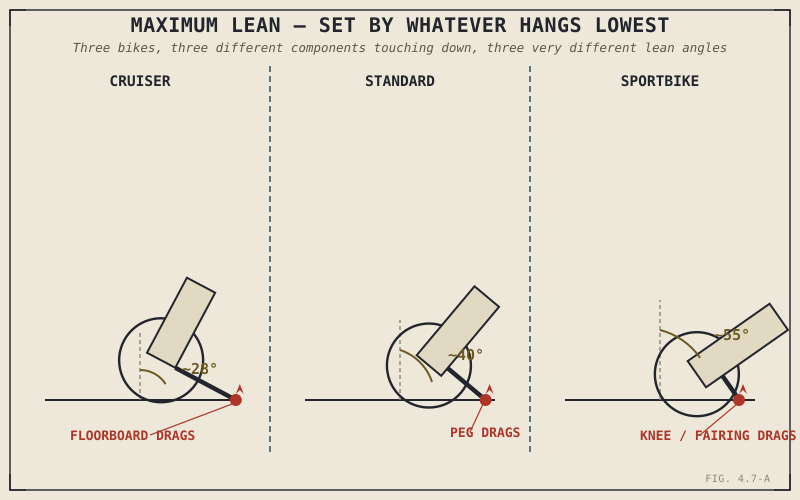

A skilled rider on a cruiser with low-slung floorboards will drag a peg on the pavement at a lean angle that a mediocre rider on a modern sportbike could clear without a second thought. That isn't a verdict on either rider's skill. It's a hardware limit, built into the motorcycle before either of them ever threw a leg over it, and this chapter is about exactly what that limit actually is and why it varies so dramatically between different kinds of motorcycles.
Chapters 4.4 through 4.6 explained why and how a motorcycle leans and turns. None of them addressed the practical ceiling on that lean — what actually stops it, and what happens to the tyre doing all the work once the bike gets close to that ceiling.
How Much Lean a Corner Actually Demands
Chapter 1.2 established that leaning is the mechanical answer to combining cornering force and gravity through a motorcycle's narrow line of contact, and promised the full vector treatment for later in this book. The short version, without the full derivation Part VIII will eventually supply: the tighter the corner and the faster the speed, the greater the cornering force, and the more the bike has to lean to keep that combined force lined up through the contact patch. This is a real, calculable relationship, not a rough feeling — a given speed and corner radius genuinely demand a specific lean angle, and a rider either provides it or the bike runs wide.
What Actually Touches Down First
Lean angle has a hard physical ceiling: eventually, something on the motorcycle other than the tyres reaches the ground. What touches down first, and at what lean angle, depends entirely on what protrudes lowest and furthest from the bike's centreline — footpegs, exhaust pipes, a centrestand, fairing lowers, or in some cases the frame itself. This is precisely why different categories of motorcycle have such wildly different maximum lean angles despite all obeying the identical physics from the previous section: a cruiser's low-slung floorboards and pipes, chosen for a relaxed riding position and styling, ground out at a comparatively shallow lean angle, while a sportbike's tucked-in components and higher ground clearance, chosen specifically to chase cornering performance, allow dramatically more lean before anything touches down.
This connects directly back to Chapter 2.11's discussion of engine layout: a boxer engine's cylinders, protruding to either side of the bike for the excellent primary balance that chapter described, are a real, physical example of exactly the kind of protrusion this chapter is describing — a design choice made for one good reason, engine smoothness, that directly costs cornering clearance as an unavoidable side effect.
Maximum lean angle isn't a single universal number a motorcycle either has or doesn't. It's set by whatever component happens to hang lowest and furthest out — and that component is usually there for a completely unrelated reason, from styling to engine balance to riding position.

Three motorcycles leaned to their respective maximum angles — a cruiser, a standard, and a sportbike — each shown touching down on a different component, with the actual lean angle achieved varying significantly between them.
The Tyre Is Doing Something Different at Full Lean
As a motorcycle leans further from upright, the contact patch — the actual area of tyre touching the road — doesn't stay in the same place on the tyre's surface. It migrates across the tyre's rounded profile, moving from the centre tread used while riding upright toward the shoulder of the tyre as lean angle increases. This is exactly why motorcycle tyres are shaped with a deliberately rounded, rather than flat, cross-section: a flat profile would produce an awkward, shrinking contact patch as the bike leaned, while a properly rounded profile maintains a usable contact patch shape across the full range of lean angles a rider might actually use. Part VI will cover exactly how that contact patch generates grip in full, but it's worth noting here plainly: riding at maximum lean means riding on a genuinely different part of the tyre than cruising upright, with different rubber, different wear history, and potentially different temperature than the centre tread sees.
This is also the mechanical reason behind "chicken strips" — the unworn band of tread sometimes visible at the very edge of a tyre, informal evidence of how much of that tyre's shoulder a rider has actually used, or hasn't.
A Common Misconception, Cleared Up Early
It's tempting to treat maximum lean angle purely as a measure of rider skill or bravery — dragging a knee, or a peg, framed as an act of pure nerve. Skill and available grip both genuinely matter, but this chapter's whole point is that a motorcycle's hardware sets a real, physical ceiling that skill alone cannot exceed: a highly skilled rider on a bike with limited cornering clearance will ground out a peg or pipe at a shallower lean angle than a considerably less skilled rider on a sportbike built with generous clearance, regardless of either rider's actual talent. Achieved lean angle is a joint function of rider skill, available tyre grip, and the hardware's mechanical limits together — treating it as a pure skill statistic, detached from what the specific motorcycle underneath the rider actually allows, misses most of the story.
Where This Leads
This chapter covered how far a motorcycle can lean and what stops it. What it hasn't addressed is a related dimensional question: how wheelbase and swingarm design shape a motorcycle's stability, agility, and how weight transfers under acceleration. Chapter 4.8 turns to exactly that.
Key Concepts to Remember
- Required lean angle is set by a real, calculable relationship between cornering force and gravity, not a rough feeling — tighter corners and higher speeds genuinely demand more lean.
- Maximum achievable lean angle is set by whichever component protrudes lowest and furthest from the bike's centreline — pegs, pipes, fairings, or in some cases the frame — and this varies dramatically between motorcycle categories built for different priorities.
- Design choices made for unrelated reasons, like a boxer engine's width from Chapter 2.11, directly cost cornering clearance as a side effect, independent of anything to do with lean angle itself.
- As lean angle increases, the tyre's contact patch migrates from the centre tread toward the shoulder, which is why motorcycle tyres use a rounded rather than flat profile.
- Achieved lean angle depends jointly on rider skill, available tyre grip, and the motorcycle's hardware limits — it is not a pure measure of rider bravery detached from what the specific bike allows.
Cross-References
| ← Ch. 1.2 | Established the physics relationship between cornering force, gravity, and required lean, promising the full derivation for Part VIII. |
| ← Ch. 2.11 | Described a boxer engine's protruding cylinders as a trade for primary balance; this chapter identifies that same protrusion as a direct cornering-clearance cost. |
| → Pt. VI | Tyres & Wheels will cover contact patch grip generation in full, building on this chapter's introduction of contact patch migration under lean. (Not yet published.) |
| → Ch. 4.8 | Covers wheelbase and swingarm design, the next chassis dimension shaping stability and weight transfer. |